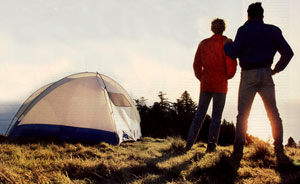
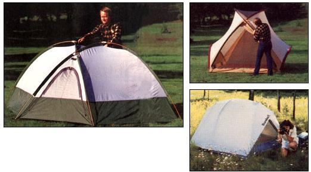

A preview of the upcoming "Great Outdoors" issue of Mother's sister publication, American Country
A worthy tent is not so much a portable abode as a vessel. In fact, one that's well designed will make an earnest attempt to float if need be.
This pithy observation came to me the other night as I lay in a meadow of ripstop gluttony. It was snowing. Thanks to a 40-mph tail wind, the flakes sounded and felt more like sand. This is weather that can work its way through all sorts of protection schemes. Tent-testing weather.
My prejudices and curiosities, aided by the happenstance of certain returned phone calls, had resulted in my examining four tents of varying pedigrees and raisonsd'etre : The Walrus Orbit Rapide ($298), a roomy, two-person, four-season, six-sided expedition tent; the Sierra Designs Comet ($242), a three-person, three-season, rectangular tent; the Eureka Alpine Meadows ($130), a four-person tent based on the company's time-honored Timberline design; and the Moss Encore ($675), a graceful brown ballroom in which four can easily sleep and eight can easily stand. Two dome de luxes, two Volkstents.
It was 20°-warm for Wyoming, November, midnight. About an inch of snow had collected on the ground. I was trying to sleep in the Walrus. Rain flies on all four tents whipped and popped, making sincere going-away noises. Should a tent become unmoored, the next two obstacles would be a barbed-wire fence 100 feet away and, a quarter mile after that, a saloon parking lot.
The nagging question was, should I get up and see to their security? The answer was easy: Nah. Each had at least four stakes pounded into frozen ground. I did finally stir, however, when it occurred to me that the same wind was causing a 75-foot cottonwood about 60 feet upwind to gasp for its breath. Feeling adequately inspired about the meaning of tents, I unzipped my down bag, wriggled into britches, emerged from the Walrus, inspected for loose stakes and walked across the lawn to my own bed.
Tent Progress
Today there's no reason to buy a tent that won't set up in a jiffy, be moved of that dang root in half a jiffy and thwart claustrophobia after you've been penned in for a few days in bad weather.
Brand name: Competition born of the outdoor equipment boom of the '70s has brought to market a bounty of excellent designs and executions. Tent manufacturers have done such a thorough job of stealing refinements from one another that the best reasons for brand loyalty probably concern service. Most popular (and unpopular) brands still offer service in the Baby-Boom outdoor-gear tradition: They're embarrassed when something goes wrong and fix it quickly-for free if they're really embarrassed.
Companies like North Face, Sierra Designs, Kelty and several others were started by outdoor idealists in the '60s (well, Kelty goes further back), made huge profits in the '70s and sold out to larger firms-just in the nick of time-in the early '80s. The outdoor gear market went thud in the mid-'80s as legions of would-be urban campers discovered convection ovens and million-cell spread sheet computer software.
Less well known brands (Moss Tents, Stephenson Warmlite) have resisted the perpetual-growth-or-die philosophy, and they continue to sew limited quantities for a stable customer base, most of whom come by word of mouth. Moss Tents keeps afloat by its diversity as well, making exotic convention booths and innovative, semi permanent fabric structures.
Eureka! is the GM of tentdom. The catalogue sports some 45 different models. The ubiquitous Timberline could well be the first tent you ever slept in. The price of just about any Eureka! is hunky-dory, and-especially for noncritical applications like car camping-any Eureka! will do a fine job.
There are several small, relatively new specialty tentmakers out there. I requested the Walrus to represent this species. It was amusing to learn that Walrus is the baby of Bob Swanson and George Marks, who started a little company called Sierra Designs 23 years ago.
Design: The Gospel of Dome is writ large across the landscape. Like the song "Proud Mary," a dome tent is great when done right. Variations on the dome are manifold. There are countless ways to emulate the arched form of a frightened-cat, but each includes poles fastened to grommets at the tent's lower periphery, which arch and push up and out.
Bill Moss, the nation's foremost designer of what he likes to call "tensioned fabric," is pretty much responsible for the way tents look today. His first dome tent was a "pop tent," an item that made a page in a 1955 Life magazine for its novelty.
The one significant exception to the dome trend is what Kelty now calls the Conestoga, and what others call hoop or tunnel style. Kelty's "new" Windfoil is the latest design that hard-core mountaineers covet-one that's based on a tent that Stephenson Warmlite has been making since 1964. It consists of two or three hoops holding open a tube, vestibules on either end and a tug-of-war means of holding it up.
Seasoning: No arm of the Department of Agriculture regulates the wording in brochures. Most tents are deemed "three-season"; when they say "four-season," they mean winter. A four-season tent, usually tagged "expedition" as well, is supposed to take snow loads, shed high winds and have a vestibule or two (optional or standard) for extra closet space and to offer a spot to perform cooking chores on bare ground.
Sleeping capacity: When all you're going to do in a tent is sleep, and those involved don't move much at night, the tentmaker's number will stand. If you're new at this, I recommend adding one to the number; if just you and another will be using it, a three-person tent is wonderfully roomy with minimal weight increase. (Unless, of course, much backpacking is involved; then every ounce is significant.)
Weight: You'll drive yourself nuts if you squint too hard when comparing advertised weights. Although the competition to have the lightest, largest tent is dogged, reputable manufacturers tend to keep their advertised figures in the ballpark-although the caveat "weight does not include pegs, seam sealer . . ." is standard fare. I put the Orbit and the Comet on the produce scale at Farmer Jack's. Both were within an ounce or two of claimed weight. The usual disclaimer of minor variations covers that.
Weight is as weight does. Heavier is stronger, materials and design being equal. Extra reinforcement, in the form of double-needle stitching, bar tacking, lined stress points and so on, adds ounces. Careful shopping means knowing which are the ounces of prevention.
Fabric: Nylon. It comes in more varieties than snow. Heavier (taffeta, Oxford) nylon better withstands shearing, puncture and abrasion. Thinner nylon is lighter. Urethane-coated nylon is waterproof and less drafty to boot. Ripstop nylon is designed to do just that with its grid of heavier threads. (The benefits of Gore-Tex are moot thanks to one quirk: Gore-Tex does not currently pass the tent industry's fire-retardancy regulations.)
Nylon's weight, or thickness, is measured in ounces per square yard, with 1.2 and 2.5 the most common at the extremes. One point two-ounce nylon is wispy stuff, perfect for inner walls. Coated 2-pointsomething sheeting is commonly used for floors, while rain flies are likely to be 1.7- or 1.9-ounce coated ripstop. "No-see-um" nettings segregate the bugs from the bags. The finer the mesh, the fewer insects get in your ear.
Poles: Many tentmakers boast high-grade aluminum (7075, for example), usually made by Easton. This is tried and true stuff, guaranteed for life. On some tents, Sierra Designs gives you the cheaper option of glass-composite poles, which are lighter and more compact.
Never, never believe any salesperson or brochure that claims a pole is unbreakable. There's no such thing. Somewhere there blows a wind that will snap any pole, shred any tent.
Shock-corded poles assemble themselves in a magician's trick. This is no small convenience when wind-driven graupel is rolling down your neck. Beware of flimsy cord-threading a broken one is the real trick.
Zippers: YKK has done its part to eliminate the world's concern for reliable zippers. Its plastic-coil models are preferred for tent use and do an admirable job-although the clever salesperson who coined the term "self-healing" deserves an award only for enthusiasm. If you expect perfection, you'll learn a lesson in the nature of things.
Cost: All companies want your business. Now that the market has flattened, some are desperate for it. It's a double-edged sword. You might be getting more for your money; you might be getting newer short-cut manufacturing methods.
Manufacturers right and left are knocking a hundred bucks off their tents just by having them sewn overseas. Both the Comet and the Alpine Meadow sported tags announcing their birth in Korea. The Orbit proudly displayed "Made in U.S.A.," although that won't be the case by the time you read this. A tent sewn overseas may or may not be made of American fabric.
Finishing the product: That's your job. Needles poke holes in nylon-it's called sewing. Those holes will leak a bit unless you take the trouble to seal them; tents usually come with a tube of seam sealer, and you're foolish not to spend an evening applying the stuff: (All the tents I tried arrived with a tube of seam sealer.)
The Real World
It takes practice to learn to pitch any tent with a modicum of grace and efciency. My drill is to spread the tent on its proposed site and roll around on it, miming my repertoire of sleeping positions, a practice which assures smooth ground, or at least tells me on which side I should sleep. This sort of Prone Position Efficacy Testing can be postponed, of course, with freestanding tents, which can readily be moved.
I was able to pitch all four test tents without resorting to instructions, but I did resort to reading instructions for installing the Walrus's rain fly. Having poles of equal length helps immensely; if the pole system requires different lengths, they should be either color-coded or of very different lengths.
The Moss Encore is a stunning piece of work. Inserting the poles through lengthy curved sleeves takes some time, a two-person job that ought to be rehearsed. With the poles in place, it's duck soup. The fly clips to four corners with Fastex buckles. Six stakes hold the entire package down, and there are adjusters at each tether. All tents arrived with pegs; only the Moss came with worthwhile heavy-duty ones.
Once pitched, the Encore looks like it's injection molded. Everyone, but everyone, wanted to buy it on the spot. The floor is 84" X 105"; the tent stands over six feet tall! I never said this is a backpacking tent-the dude weighs over 16 pounds.
For its low price, the Eureka! sported some nice touches. It weighs in at 10 pounds. The fly's side pulls have Fastex-like slide tension adjusters. Little metal hooks hold doors open; everyone else supplies the usual scraps of string. Both the pegs and the cording in the poles were on the thin side, but they were there. The long seam on the floor is heat-sealed at the factory. I found the Eureka! to be easy to set up and a good value for the money.
The Sierra Designs Comet is a no-sweat proposition, thanks to three same-length poles (Easton aluminum). The tent clips to the final pole with its Swift-Clip system. Five shock cords with clips attach the fly to the tent, bim-bam. However, the fly sported loops for three more cords, a job the new owner ought to complete. It has an ample door, ample space-it's an ample tent.
Tent brochures like to point out how thusand-so can be set up in 90 seconds while you stir your Spaghetti-Os with the other hand. Generally speaking, any tent can be set up by one person in a jiffy-it's the rain fly that gets you. The Walrus Orbit Rapide comes out of its stuff sack looking like the original Spider from Mars. Its six poles are already in their sleeves awaiting insertion in one of two hubs up top. Sounds complex, looks obvious-I had it up in two minutes on my first try. It could probably be done in 30 seconds.
The Orbit's rain fly is another matter. It requires three different-size wands. Inserting the fly's grommets over the pole ends was not easy; the new tent was tight (a good thing), but the pole ends were barely long enough to accommodate both the tent's and the fly's grommets. Pop on a grommet on this side, it would pop off on the other side. No picnic, but when it was over I had one snug unit.
Aesthetics: The Bill Mosses and Jack Stephensons capture my fancy because their passion has brought to us packages that can offer not only shelter but a little bit of smug enjoyment every time out. They cost more, you get it all.
Luckily, there are any number of fine three-person-plus tents in the under-$400 range and some plausible ones for under $300. But don't set your hopes too high. It was generally conceded that the Comet "didn't look right"-something about its rectilinear floor not quite jiving with its domish top. One fellow thought the Comet smelled funny, the remark of a nose obviously attuned to American-made nylon. The Orbit's clever two-hub pole system is simply too busy for my tastes. Too many parts. And as one mountaineer pointed out, it has a doorsill begging to be ripped out by the heel of a big boot.
Unless a tent is to be used as a storage shed for the kids over summer, being finicky about visual and practical aesthetics will pay off in due time. If you want to compound misery, try weathering a storm in a loose, gloomy tent. To use a tent is to place yourself in a situation where the senses become acute and more than a little fussy.
Every time we take a friend, a lover or a tent on a trip, we can't help but scrutinize strengths and weaknesses. (Just don't dwell on the fact that a friend or lover is probably doing the same thing.) We can change people if they need changing, or at least try. With a tent we can only get mad. Wet, too.
David Swift-writer, photographer and mountaineer-lives in Jackson, Wyoming.
|
 The Sierra Designs Comet is easy to set up and offers ample room for campers and gears. |
 The trio of tents: the inexpensive Eureka (bottom right), the graceful Moss Encore (top right) and the roomy Walrus Orbit Rapide (left) |
|